Every word from Lessons 1–11, grouped by lesson, with its root in parentheses. Verbs are listed as الماضي / المضارع / المصدر. Use the search box at the top to find a word fast, or open the flashcards to drill this list in either direction. Most concrete nouns and verbs carry a picture for visual recall.
📋 Master Verb Table
Note
Every verb we've studied, in full. Columns: meaning · الماضي (past هو-form = the dictionary form) · المضارع (present هو) · المصدر (verbal noun) · plural · root · Form (I–X) · form name (الوزن). Complete — Lessons 1–11.
A note on the L1–L7 verbs' past forms
Al-Kitaab presents L1–L7 verbs in the present tense (past-tense grammar isn't taught until Lesson 8; L9–L10 give the full ماضي/مضارع/مصدر trio directly). Where the book showed present only, the الماضي column gives the standard dictionary/citation forms — not invented, just supplied for consistency. Many مصدر forms are book-confirmed (العَمَل L2; السَفَر L4; الحُصول, الجَري, السِباحة, الرَقص, التَصوير L6; and the L9–L10 trios verbatim).
Verb (meaning)
الماضي
المضارع
المصدر
Plural
Root
Form
Form name
Form I — فَعَلَ / فَعِلَ (the bare root)
to study
دَرَسَ
يَدرُس
الدِّراسة
—
د-ر-س
I
فَعَلَ
to reside, live
سَكَنَ
يَسكُن
السَّكَن
—
س-ك-ن
I
فَعَلَ
to know
عَرَفَ
يَعرِف
المَعرِفة
—
ع-ر-ف
I
فَعَلَ
to eat
أكَلَ
يَأكُل
الأكل
—
أ-ك-ل
I
فَعَلَ
to read
قَرَأَ
يَقرأ
القِراءة
—
ق-ر-أ
I
فَعَلَ
to say
قالَ
يَقول
القَول
أقوال
ق-و-ل
I
فَعَلَ
to write
كَتَبَ
يَكتُب
الكِتابة
—
ك-ت-ب
I
فَعَلَ
to be (was)
كانَ
يَكون
الكَون
—
ك-و-ن
I
فَعَلَ
to feel
شَعَرَ
يَشعُر
الشُعور
—
ش-ع-ر
I
فَعَلَ
to go (to)
ذَهَبَ
يَذهَب
الذَهاب
—
ذ-ه-ب
I
فَعَلَ
to live
عاشَ
يَعيش
العَيش
—
ع-ي-ش
I
فَعَلَ
to die
ماتَ
يَموت
المَوت
—
م-و-ت
I
فَعَلَ
to begin
بَدَأَ
يَبدَأ
البَدء
—
ب-د-أ
I
فَعَلَ
to sit
جَلَسَ
يَجلِس
الجُلوس
—
ج-ل-س
I
فَعَلَ
to leave (a place)
خَرَجَ
يَخرُج
الخُروج
—
خ-ر-ج
I
فَعَلَ
to return
عادَ
يَعود
العَودة
—
ع-و-د
I
فَعَلَ
to eat breakfast
فَطَرَ
يَفطُر
الفُطور
—
ف-ط-ر
I
فَعَلَ
to leave (house) / stay
نَزَلَ
يَنزِل
النُزول
—
ن-ز-ل
I
فَعَلَ
to come
جاءَ
يَجيء
المَجيء
—
ج-ي-أ
I
فَعَلَ
to wake up
صَحا
يَصحو
الصَحْو
—
ص-ح-و
I
فَعَلَ
to sleep
نامَ
يَنام
النَوم
—
ن-و-م
I
فَعَلَ
to enter
دَخَلَ
يَدخُل
الدُخول
—
د-خ-ل
I
فَعَلَ
to succeed / pass
نَجَحَ
يَنجَح
النَجاح
—
ن-ج-ح
I
فَعَلَ
to obtain
حَصَلَ
يَحصُل
الحُصول
—
ح-ص-ل
I
فَعَلَ
to refuse
رَفَضَ
يَرفُض
الرَفْض
—
ر-ف-ض
I
فَعَلَ
to ask for s.o.'s hand in marriage
خَطَبَ
يَخطُب
الخِطبة
—
خ-ط-ب
I
فَعَلَ
to work
عَمِلَ
يَعمَل
العَمَل
أعمال
ع-م-ل
I
فَعِلَ
to memorize
حَفِظَ
يَحفَظ
الحِفظ
—
ح-ف-ظ
I
فَعِلَ
to play
لَعِبَ
يَلعَب
اللَعِب
—
ل-ع-ب
I
فَعِلَ
to stay up late
سَهِرَ
يَسهَر
السَهَر
—
س-هـ-ر
I
فَعِلَ
to understand
فَهِمَ
يَفهَم
الفَهم
—
ف-هـ-م
I
فَعِلَ
Form II — فَعَّلَ (doubled middle radical)
to teach
دَرَّسَ
يُدَرِّس
التَدريس
—
د-ر-س
II
فَعَّلَ
to smoke
دَخَّنَ
يُدَخِّن
التَدخين
—
د-خ-ن
II
فَعَّلَ
to pray
صَلّى
يُصَلّي
الصَلاة
—
ص-ل-و
II
فَعَّلَ
Form III — فاعَلَ (long ا after R1)
to travel
سافَرَ
يُسافِر
السَفَر
أسفار
س-ف-ر
III
فاعَلَ
to meet
قابَلَ
يُقابِل
المُقابَلة
—
ق-ب-ل
III
فاعَلَ
to study / review
ذاكَرَ
يُذاكِر
المُذاكَرة
—
ذ-ك-ر
III
فاعَلَ
to help (with)
ساعَدَ
يُساعِد
المُساعَدة
مُساعَدات
س-ع-د
III
فاعَلَ
Form IV — أَفعَلَ (prefixed أ)
to wake (someone) up
أيقَظَ
يوقِظ
الإيقاظ
—
ي-ق-ظ
IV
أَفعَلَ
to become
أصبَحَ
يُصبِح
—
—
ص-ب-ح
IV
أَفعَلَ
to want (to)
أرادَ
يُريد
الإرادة
—
ر-و-د
IV
أَفْعَلَ
Form V — تَفَعَّلَ (تَـ + Form II)
to speak, talk
تَكَلَّمَ
يَتَكَلَّم
التَكَلُّم
—
ك-ل-م
V
تَفَعَّلَ
to remember
تَذَكَّرَ
يَتَذَكَّر
التَذَكُّر
—
ذ-ك-ر
V
تَفَعَّلَ
to graduate
تَخَرَّجَ
يَتَخَرَّج
التَخَرُّج
—
خ-ر-ج
V
تَفَعَّلَ
to gather together
تَجَمَّعَ
يَتَجَمَّع
التَّجَمُّع
—
ج-م-ع
V
تَفَعَّلَ
to get to know, meet
تَعَرَّفَ على
يَتَعَرَّف على
التَّعَرُّف على
—
ع-ر-ف
V
تَفَعَّلَ
Form VI — تَفاعَلَ (تَـ + Form III)
to exchange (news, opinions)
تَبادَلَ
يَتَبادَل
التَّبادُل
—
ب-د-ل
VI
تَفاعَلَ
Form VII — اِنفَعَلَ (اِنـ prefix)
to be cut off
اِنقَطَعَ
يَنقَطِع
الانقِطاع
—
ق-ط-ع
VII
اِنفَعَلَ
Form VIII — اِفتَعَلَ (infixed ـتـ)
to listen (to)
استَمَعَ
يَستَمِع
الاستِماع
—
س-م-ع
VIII
اِفتَعَلَ
to join / enter
التَحَقَ
يَلتَحِق
الالتِحاق
—
ل-ح-ق
VIII
اِفْتَعَلَ
Form X — اِستَفعَلَ (اِستـ prefix)
to be able to
استَطاعَ
يَستَطيع
الاستِطاعة
—
ط-و-ع
X
استَفعَلَ
to enjoy
استَمتَعَ
يَستَمتِع
الاستِمتاع
—
م-ت-ع
X
استَفعَلَ
About the "Plural" column
Verbs don't have plurals — so I've filled it with the plural of the verbal noun (مصدر) where a common one exists (e.g. مُساعَدات), and "—" otherwise. If you meant something else (the plural imperative, or a separate noun table with plurals), say so and I'll switch it.
🧭 The Verb Forms (الأوزان) — rules & patterns
Note
Pattern columns use ف-ع-ل as the model root: ف = R1, ع = R2, ل = R3. "Mine" = verbs from the table above.
Form
الماضي
المضارع
المصدر
What it does
Mine
I
فَعَلَ / فَعِلَ
يَفعُل · يَفعِل · يَفعَل
unpredictable — memorize it
The bare root meaning, no extra layer
دَرَسَ، كَتَبَ، فَهِمَ
II
فَعَّلَ
يُفَعِّل
تَفعيل
Causative or intensive of I — "make/cause someone to do X", or do X repeatedly
دَرَّسَ (to teach = make study)، دَخَّنَ
III
فاعَلَ
يُفاعِل
مُفاعَلة (also فِعال)
Doing X to / with someone else — directed at a partner
سافَرَ، قابَلَ، ساعَدَ
IV
أَفعَلَ
يُفعِل
إفعال
Causative like II, but often making something be in a state
أصبَحَ، أرادَ، أيقَظَ
V
تَفَعَّلَ
يَتَفَعَّل
تَفَعُّل
Reflexive of II — the action turned back on the doer
تَكَلَّمَ، تَخَرَّجَ، تَذَكَّرَ
VI
تَفاعَلَ
يَتَفاعَل
تَفاعُل
Reciprocal of III — two or more parties doing it to each other
تَبادَلَ
VII
اِنفَعَلَ
يَنفَعِل
اِنفِعال
Passive / intransitive of I — it happens to the subject, no agent named
اِنقَطَعَ
VIII
اِفتَعَلَ
يَفتَعِل
اِفتِعال
Reflexive of I, often doing X for one's own benefit
استَمَعَ، التَحَقَ
IX
اِفعَلَّ
يَفعَلّ
اِفعِلال
Colors and physical defects only (اِحمَرَّ = to turn red)
none yet
X
اِستَفعَلَ
يَستَفعِل
اِستِفعال
Seeking or considering X — "ask for / find something to be X"
استَطاعَ، استَمتَعَ
Recognition shortcuts:
Present prefix vowel: Forms II, III, IV take يُـ (ḍamma). Everything else takes يَـ (fatḥa). This alone splits the field in half.
تَـ at the front of the past → V or VI. Doubled ع = V, long ا = VI.
ا at the front of the past (اِنـ / اِفـ / اِستـ) → VII, VIII, or X — these all drop the alif in the present.
المصدر is only unpredictable in Form I. Forms II–X follow the patterns above every time, so you only have to memorize مصدر for Form I verbs.
Hollow roots (middle و/ي: قالَ، كانَ، نامَ، عاشَ) still count as Form I — the weak letter hides the pattern, it doesn't change it.
Lesson 1 — أنا ساكنة في مدينة نيويورك
المُفرَدات (ف-ر-د)
vocabulary
الفُصحى (ف-ص-ح)
formal, written Arabic
القَواعِد (ق-ع-د)
grammar (rules)
جُملة ج. جُمَل (ج-م-ل)
sentence
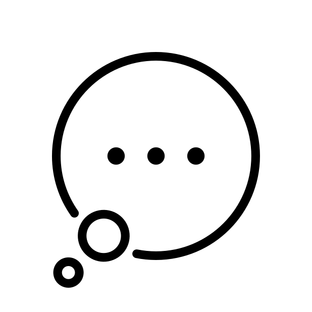
الثَقافة (ث-ق-ف)
culture
الأدَب ج. آداب (أ-د-ب)
literature
والله؟! (—)
really?! (mild oath)
صحيح؟! (ص-ح-ح)
for real?! / is that right?!
الأُمَم المُتَّحِدة (أ-م-م / و-ح-د)
the United Nations
أيّ …؟ (—)
which …?
مَن؟ (—)
who?
جِنسِيّة ج. ‑ات (ج-ن-س)
nationality
مِصريّ / ة (م-ص-ر)
Egyptian
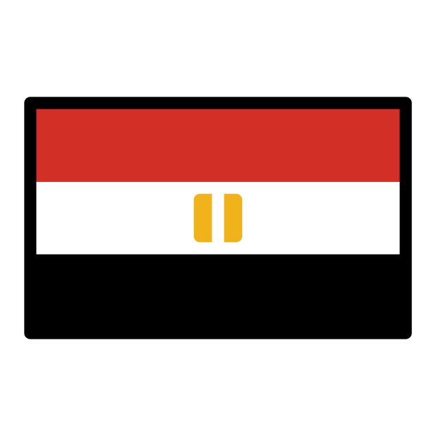
مِنطَقة ج. مَناطِق (ن-ط-ق)
area, region
نَفْس الـ… (ن-ف-س)
the same …
عُنوان ج. عَناوين (ع-ن-و)
address
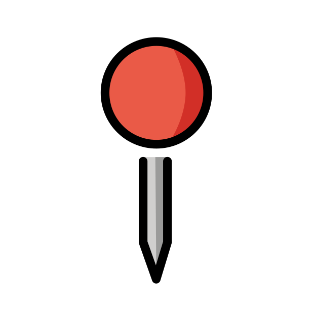
سَنة ج. سَنَوات (س-ن-و)
year
عُمْر ج. أعمار (ع-م-ر)
age
والِد (و-ل-د)
father
والِدة (و-ل-د)
mother
Verbs — store as ماضي / مضارع / مصدر
دَرَسَ / يَدرُس / الدِّراسة (د-ر-س)
to study
سَكَنَ / يَسكُن / السَّكَن (س-ك-ن)
to reside, live
عَمِلَ / يَعمَل / العَمَل (ع-م-ل)
to work
Lesson 2 — أنا فعلاً وحيدة!
أُسرة ج. أُسَر (أ-س-ر)
(nuclear) family
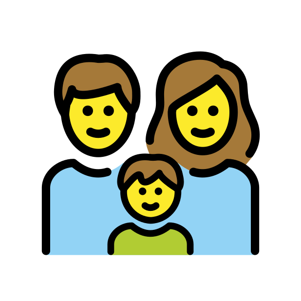
الناس (ن-و-س)
people
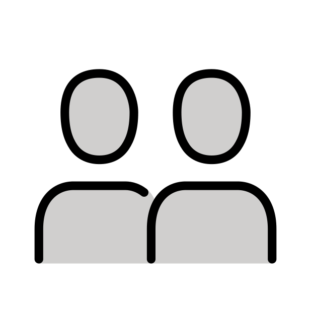
أيضاً (أ-ي-ض)
also, too
بَلَد ج. بِلاد / بُلدان (ب-ل-د)
country
التَرجَمة (ر-ج-م)
translation (from … to)
مُتَرجِم / ة (ر-ج-م)
translator
مُتَخَصِّص / ة في (خ-ص-ص)
specialist / specializing in
خالة ج. خالات (خ-و-ل)
maternal aunt
دائماً (د-و-م)
always
مَركَز ج. مَراكِز (ر-ك-ز)
center
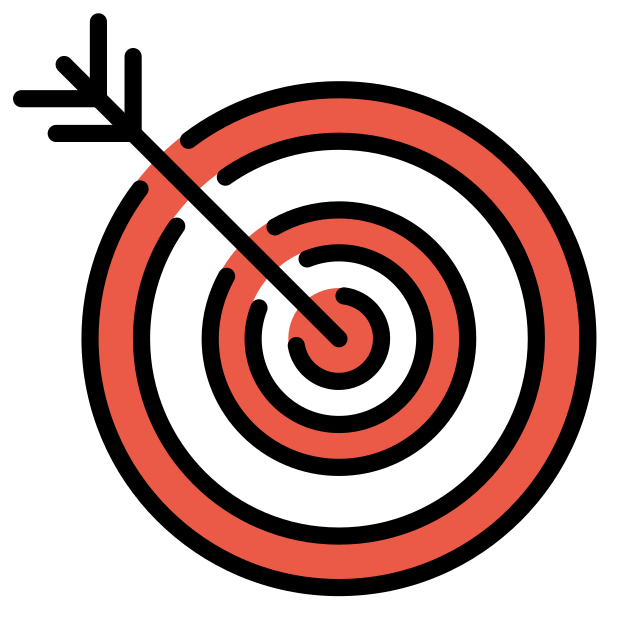
الشَرق الأوسَط (ش-ر-ق / و-س-ط)
the Middle East
مَشغول / ة بـ (ش-غ-ل)
busy (with)
العَمَل / الشُغل (ع-م-ل / ش-غ-ل)
work
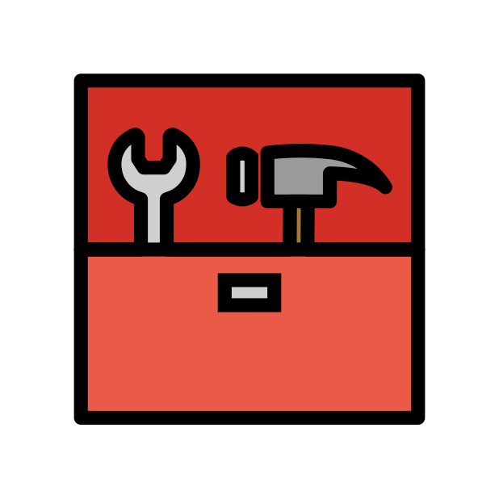
غَداً (غ-د-و)
tomorrow
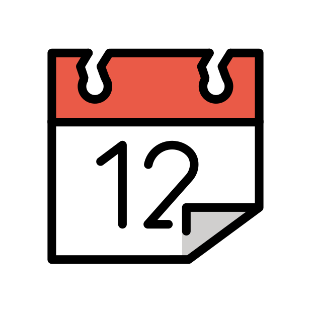
فِعلاً (ف-ع-ل)
really!, truly
القَبول (ق-ب-ل)
admission(s)
لي / عِندي (ع-ن-د)
I have
لُغة ج. لُغات (ل-غ-و)
language
المَساء (م-س-و)
evening
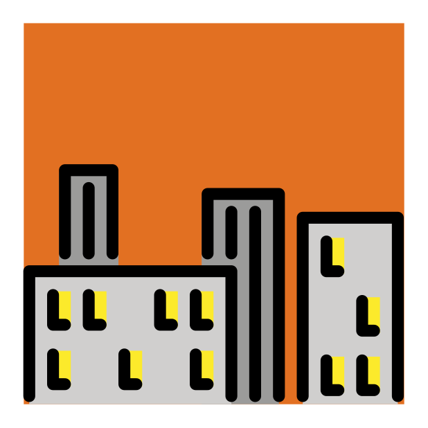
اللَيْل (ل-ي-ل)
night
النَهار (ن-ه-ر)
daytime
وَحيد / ة (و-ح-د)
only; lonely (adj.)
مُوَظَّف / ة (و-ظ-ف)
employee
اليَوم (ي-و-م)
today
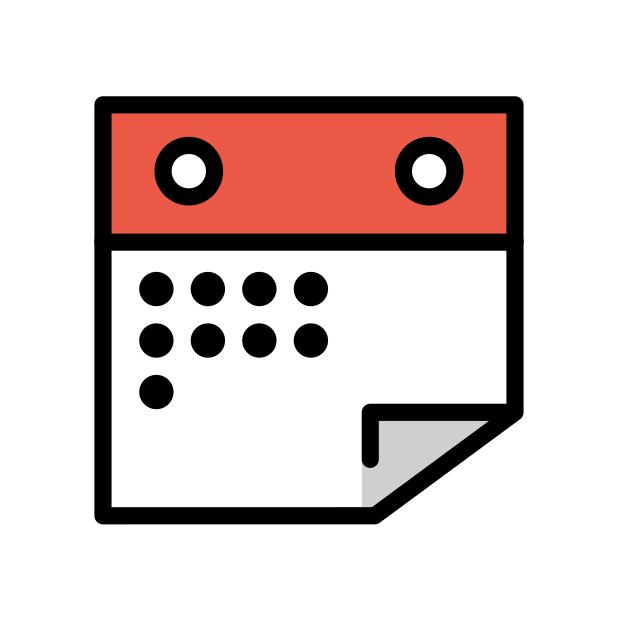
Verb — store as ماضي / مضارع / مصدر
تَكَلَّمَ / يَتَكَلَّم / التَكَلُّم (ك-ل-م)
to speak, talk (about — عن)
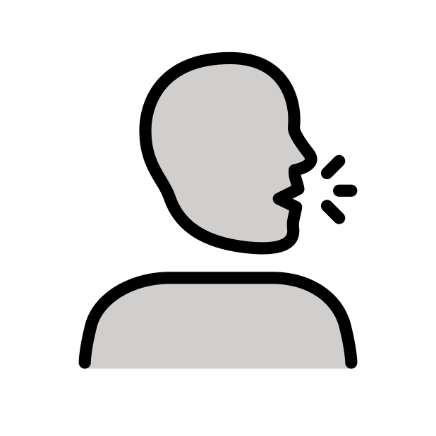
Lesson 3 — عائلة والدي كبيرة
التاريخ ج. تواريخ (أ-ر-خ)
history; date
الآن (—)
now
مَبروك! (ب-ر-ك)
congratulations!
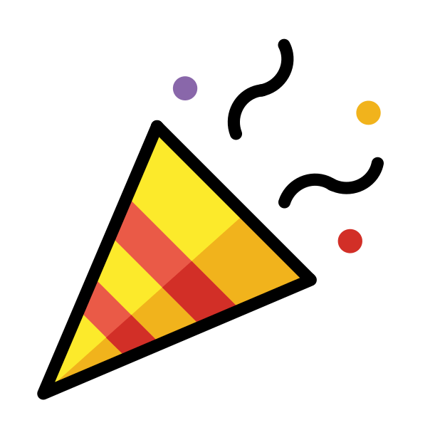
بارَكَ اللهُ فيك (ب-ر-ك)
(reply to مبروك)
ابن ج. أبناء (ب-ن-و)
son
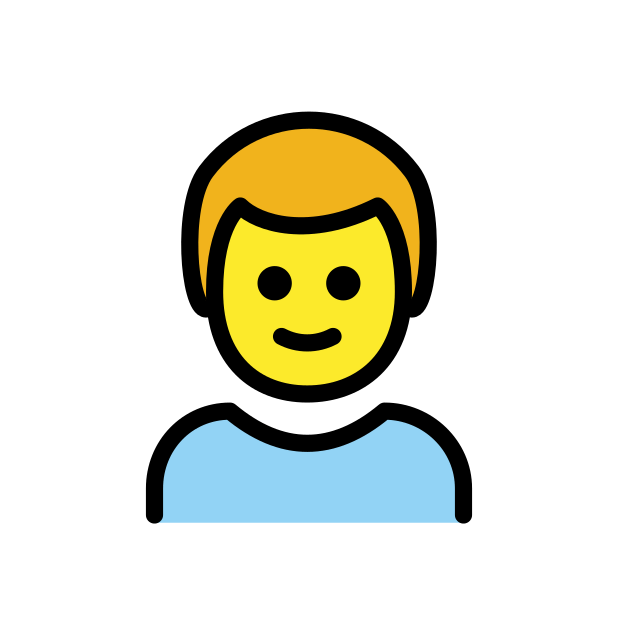
ابن عَمّ ج. أبناء عَمّ (ب-ن-و / ع-م-م)
cousin (male, paternal)
عَمّ ج. أعمام (ع-م-م)
paternal uncle
جَدّ ج. أجداد (ج-د-د)
grandfather
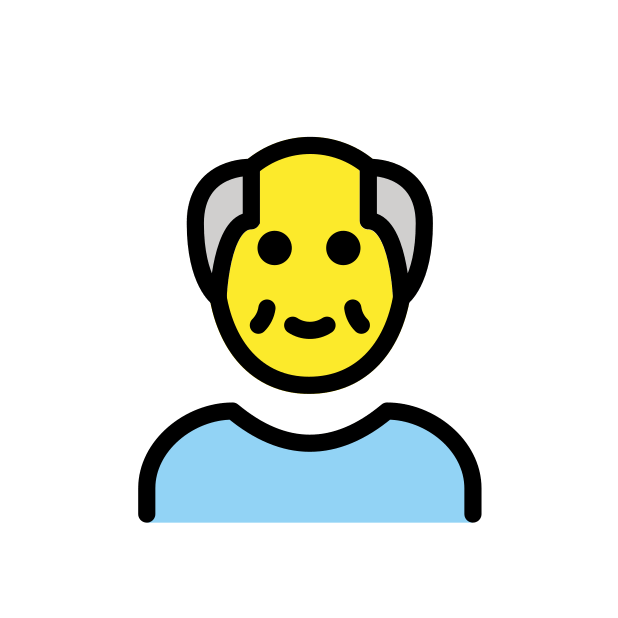
جَدّة ج. جَدّات (ج-د-د)
grandmother
قَريب ج. أقارِب (ق-ر-ب)
relative
عائلة ج. عائلات (ع-ي-ل)
(extended) family
جَيش ج. جُيوش (ج-ي-ش)
army
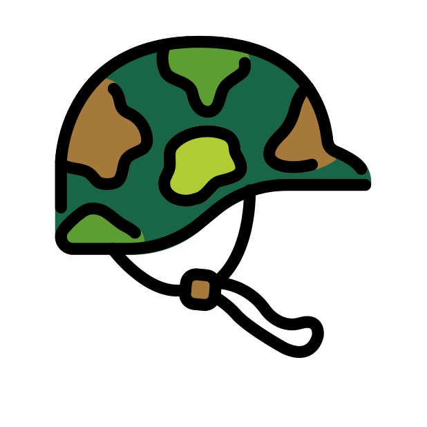
الحُقوق (ح-ق-ق)
law (as a field of study)
في الحَقيقة (ح-ق-ق)
actually, in reality
الدِين ج. أديان (د-ي-ن)
religion
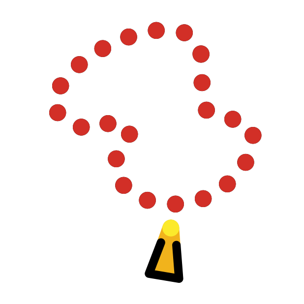
رِسالة ج. رَسائل (ر-س-ل)
letter
زَوج ج. أزواج (ز-و-ج)
husband
زَوجة ج. زَوجات (ز-و-ج)
wife
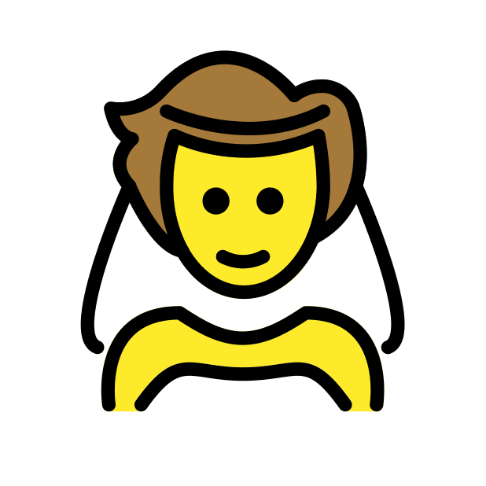
مُتَزَوِّج / ة (ز-و-ج)
married
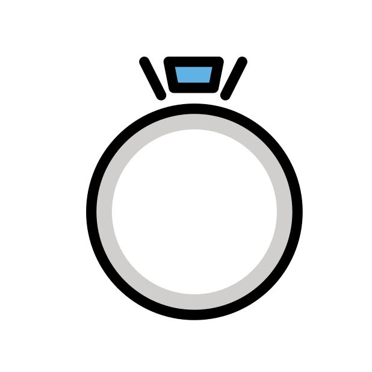
صورة ج. صُوَر (ص-و-ر)
picture
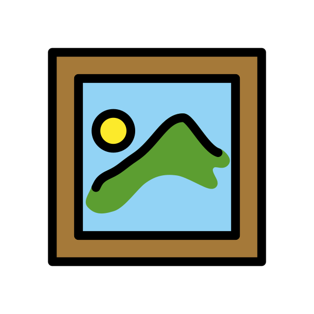
ضابِط ج. ضُبّاط (ض-ب-ط)
officer
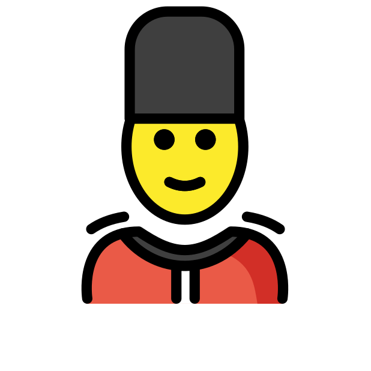
الطِبّ (ط-ب-ب)
medicine (the profession)
عِلم ج. عُلوم (ع-ل-م)
science
العُلوم السِياسِيّة (ع-ل-م / س-و-س)
political science
عِلم الإنسان (ع-ل-م / أ-ن-س)
anthropology
عِلم النَفْس (ع-ل-م / ن-ف-س)
psychology
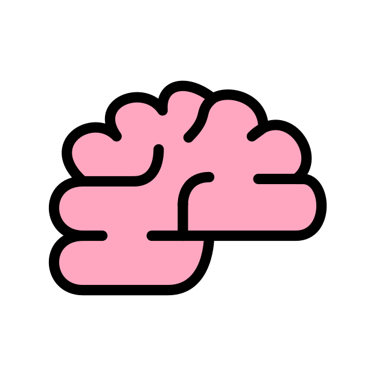
الهَندَسة (هـ-ن-د-س)
engineering
كُلِّيّة ج. كُلِّيّات (ك-ل-ل)
college, school (in a university)
كَم؟ (—)
how many?
وَلَد ج. أولاد (و-ل-د)
boy; child (pl. = children, any gender)
Verbs — store as ماضي / مضارع / مصدر
دَرَّسَ / يُدَرِّس / التَدريس (د-ر-س)
to teach
عَرَفَ / يَعرِف / المَعرِفة (ع-ر-ف)
to know
Lesson 4 — كيف أحفظ كل الأسماء؟!
أمْس (أ-م-س)
yesterday
أوّل (أ-و-ل)
first
ابتِدائيّ / ة (ب-د-أ)
primary, elementary
حَلَويّات · حَلوى (ح-ل-و)
sweets, desserts
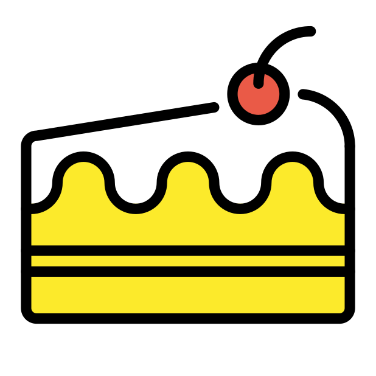
خُضار (خ-ض-ر)
vegetables
سَلَطة ج. ‑ات (س-ل-ط)
salad
شورَبة (—)
soup
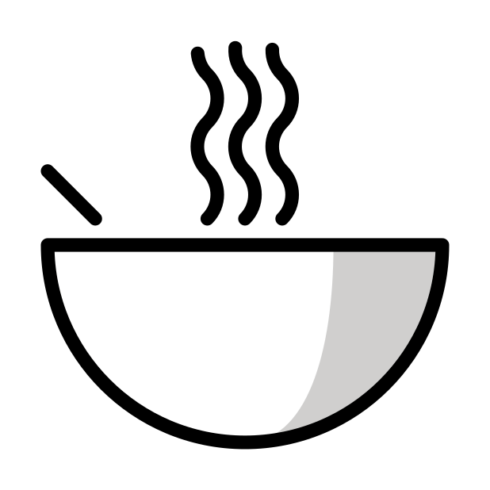
سَمَك (س-م-ك)
fish
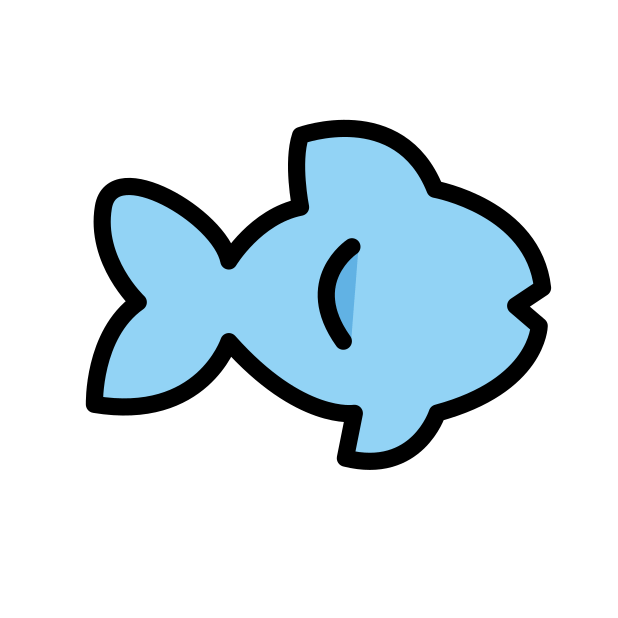
لَحم ج. لُحوم (ل-ح-م)
meat
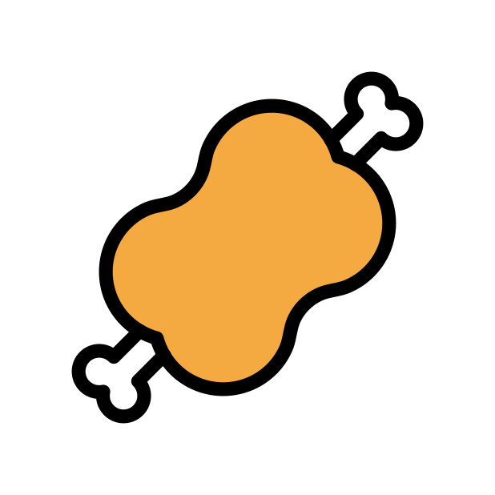
فَواكِه (ف-ك-ه)
fruits
الطُفولة (ط-ف-ل)
childhood
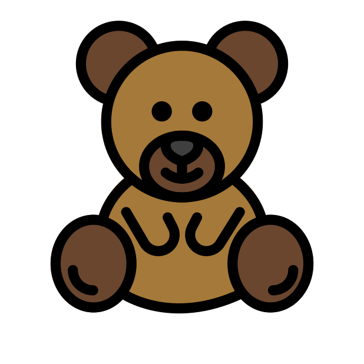
مَدرَسة ج. مَدارِس (د-ر-س)
school
مَطعَم ج. مَطاعِم (ط-ع-م)
restaurant
زَميل ج. زُمَلاء (ز-م-ل)
classmate, colleague (m)
زَميلة ج. ‑ات (ز-م-ل)
classmate, colleague (f)
صَديق ج. أصدِقاء (ص-د-ق)
friend (m)
صَديقة ج. ‑ات (ص-د-ق)
friend (f)
فَرد ج. أفراد (ف-ر-د)
individual (person)
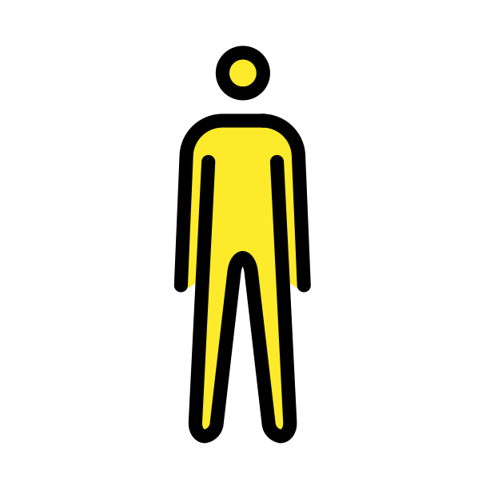
السَفَر (س-ف-ر)
traveling (verbal noun)
قَبلَ (+ اسم) (ق-ب-ل)
before (+ noun)
كُلّ (+ الجمع) (ك-ل-ل)
all (of the …)
Verbs — store as ماضي / مضارع / مصدر
أكَلَ / يَأكُل / الأكل (أ-ك-ل)
to eat
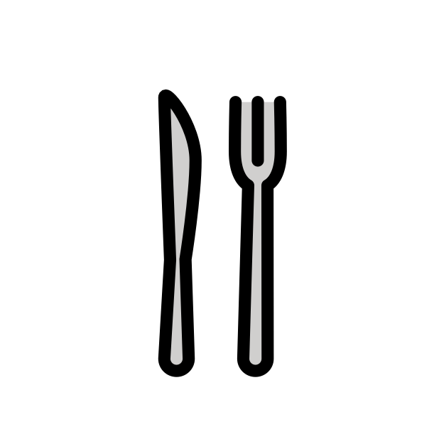
حَفِظَ / يَحفَظ / الحِفظ (ح-ف-ظ)
to memorize
تَذَكَّرَ / يَتَذَكَّر / التَذَكُّر (ذ-ك-ر)
to remember
سافَرَ / يُسافِر إلى / السَفَر (س-ف-ر)
to travel (to)
استَمَعَ / يَستَمِع إلى / الاستِماع (س-م-ع)
to listen (to)
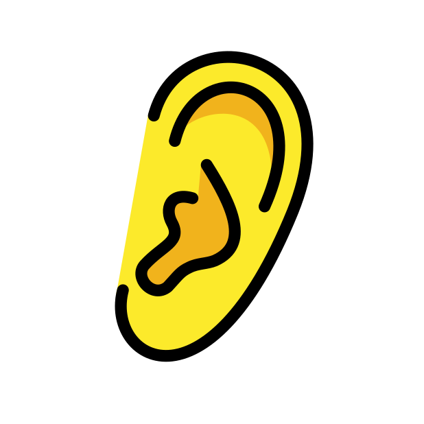
قَرَأَ / يَقرأ / القِراءة (ق-ر-أ)
to read
قالَ / يَقول / القَول (ق-و-ل)
to say
كَتَبَ / يَكتُب / الكِتابة (ك-ت-ب)
to write
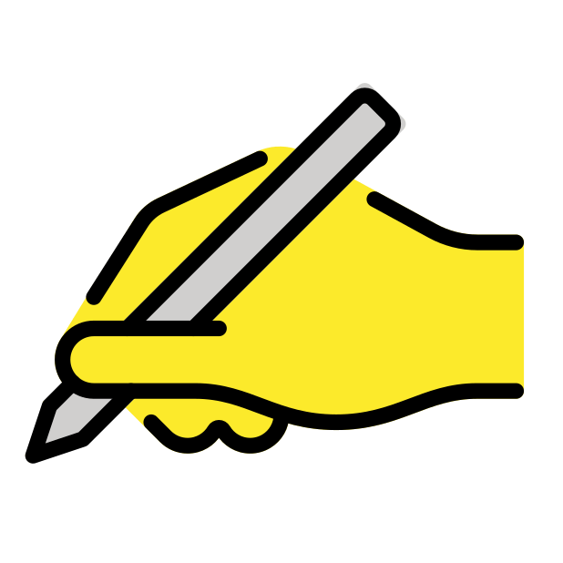
كانَ / يَكون (ك-و-ن)
to be (he was = كانَ)
Lesson 5 — الطقس حار جداً في الصيف
الجَوّ · الطَقس (ج-و-و / ط-ق-س)
weather
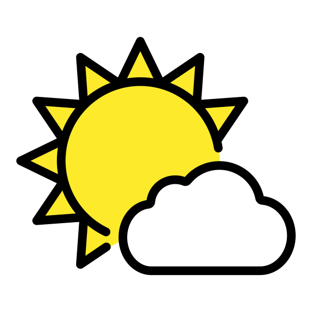
فَصل ج. فُصول (ف-ص-ل)
season
فَصل دِراسيّ (ف-ص-ل / د-ر-س)
semester
الصَيف (ص-ي-ف)
summer
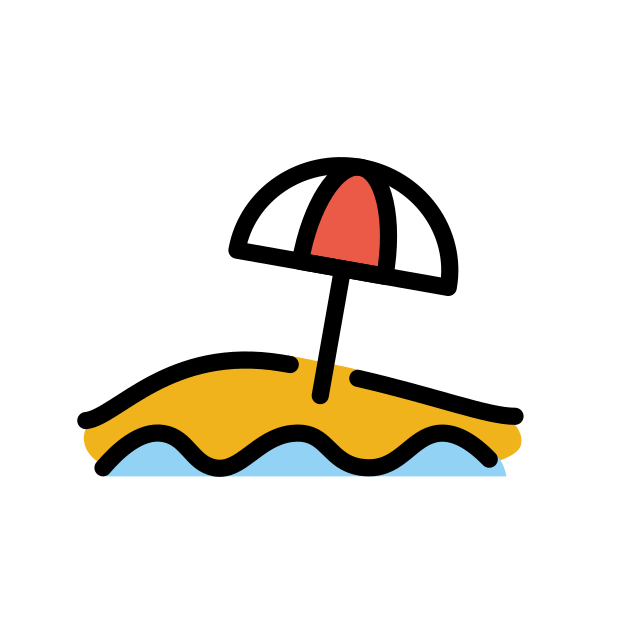
الشِتاء (ش-ت-و)
winter
الرَبيع (ر-ب-ع)
spring
الخَريف (خ-ر-ف)
autumn
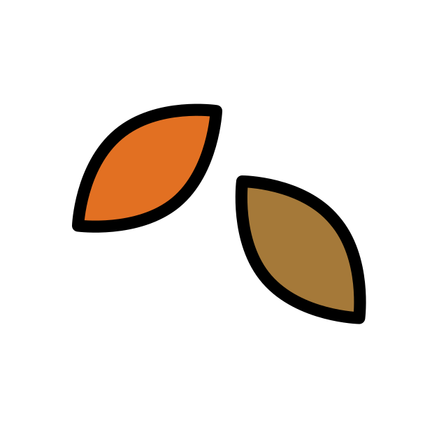
حارّ / ة (ح-ر-ر)
hot (of weather)
بارِد / ة (ب-ر-د)
cold (of things)
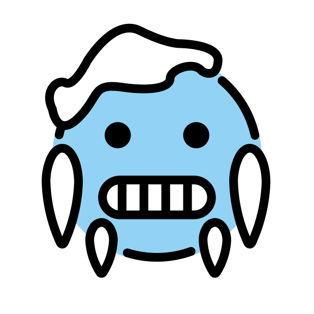
مُشمِس (ش-م-س)
sunny
غائم (غ-ي-م)
cloudy
ثَلج (ث-ل-ج)
snow
مَطَر (م-ط-ر)
rain
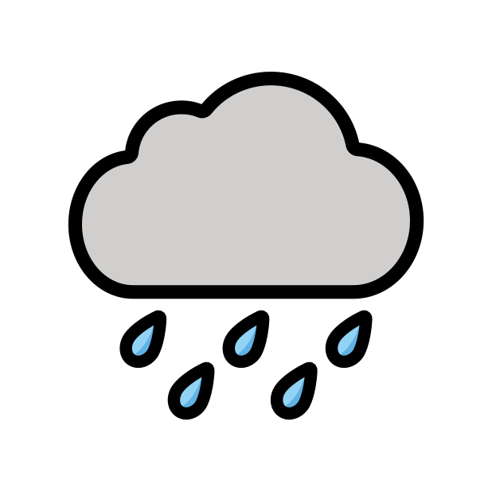
الرُطوبة (ر-ط-ب)
humidity
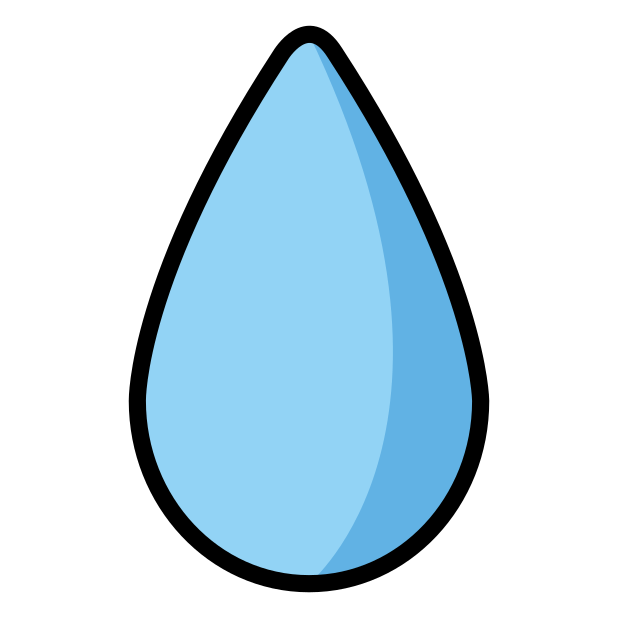
دَرَجة (د-ر-ج)
degree
دَرَجة الحَرارة (ح-ر-ر)
temperature
عالي / ة (ع-ل-و)
high
الازدِحام (ز-ح-م)
crowding, crowdedness
الوَحدة (و-ح-د)
loneliness
مِن أصل (+ nisba) (أ-ص-ل)
of ___ descent
أحسَن (ح-س-ن)
the best (+ indefinite noun)
جِدّاً (ج-د-د)
very
جَيّداً (ج-و-د)
well (adv.)
كَثيراً (ك-ث-ر)
a lot, much (adv.)
قَليلاً (ق-ل-ل)
a little bit (adv.)
أحياناً (ح-ي-ن)
sometimes
فَقَط (ف-ق-ط)
only
بِسَبَب (س-ب-ب)
because of, on account of
بالنِسبة لـ (ن-س-ب)
as far as ___ is concerned
Verb — store as ماضي / مضارع / مصدر
شَعَرَ بـ / يَشعُر بـ / الشُعور (ش-ع-ر)
to feel
Lesson 6 — معيد بكلية التجارة
التِجارة (ت-ج-ر)
commerce, trade
إدارة الأعمال (د-و-ر / ع-م-ل)
business administration
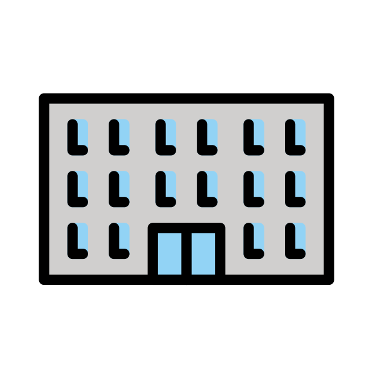
مُعيد ج. ‑ون/ين (ع-و-د)
graduate fellow, teaching assistant
مُحاضَرة ج. ‑ات (ح-ض-ر)
lecture, lecture class
شَرِكة ج. ‑ات (ش-ر-ك)
company
الحَياة (ح-ي-ي)
life
الحُصول على (ح-ص-ل)
obtaining, to obtain
هِواية ج. ‑ات (هـ-و-ي)
hobby
الرِياضة (ر-و-ض)
sports
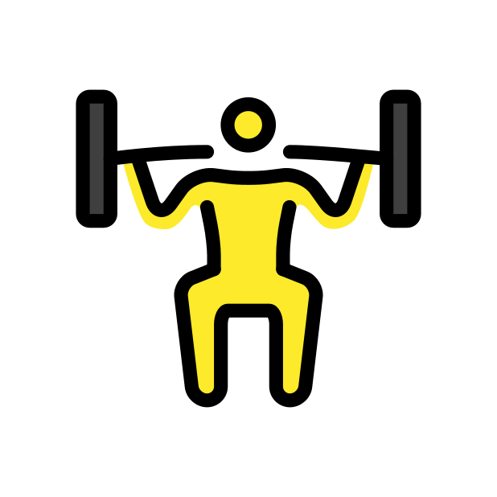
الجَري (ج-ر-ي)
running
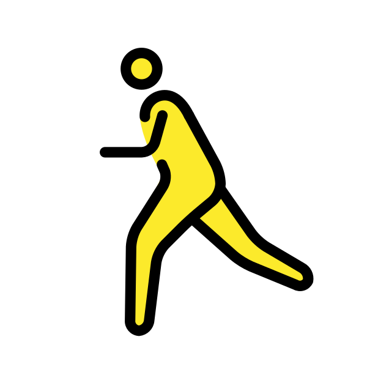
السِباحة (س-ب-ح)
swimming
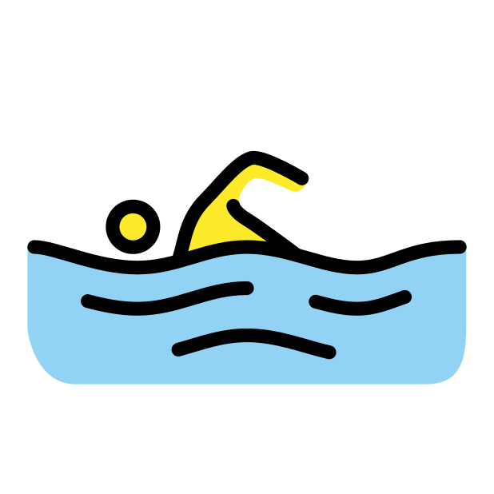
الرَقص (ر-ق-ص)
dancing
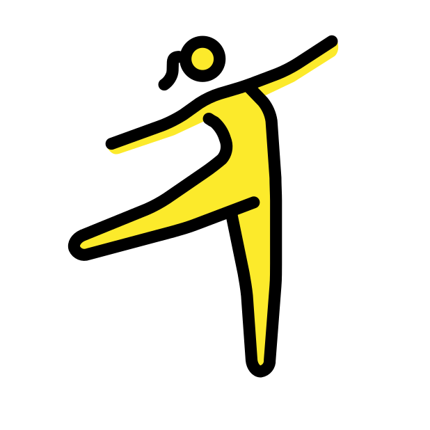
التَصوير (ص-و-ر)
photography
كُرة السَلّة (ك-ر-ر / س-ل-ل)
basketball
كُرة القَدَم (ك-ر-ر / ق-د-م)
soccer, European football
أُسبوع ج. أسابيع (س-ب-ع)
week
يَوم ج. أيّام (ي-و-م)
day
سَنَتان · سَنَتَين (س-ن-و)
two years (dual)
بَعدَ (+ اسم) (ب-ع-د)
after (+ noun)
بَعدَ ذلك (ب-ع-د)
after that
مُنذُ (—)
since, ago
مَتى؟ (—)
when?
لِماذا؟ (—)
why?
لـِ (—)
in order to, for the purpose of
لأنّ (+ جملة اسمية) (—)
because
لِذلك (—)
for that reason
Days of the week — أيّام الأسبوع
الأحَد (—)
Sunday
الاثنين (—)
Monday
الثُلاثاء (ث-ل-ث)
Tuesday
الأربعاء (ر-ب-ع)
Wednesday
الخَميس (خ-م-س)
Thursday
الجُمعة (ج-م-ع)
Friday
السَبت (س-ب-ت)
Saturday
Verbs — store as ماضي / مضارع / مصدر
تَخَرَّجَ (من) / يَتَخَرَّج / التَخَرُّج (خ-ر-ج)
to graduate (from)
ذَهَبَ إلى / يَذهَب / الذَهاب (ذ-ه-ب)
to go (to)
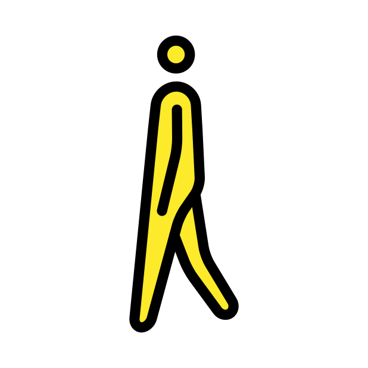
لَعِبَ / يَلعَب / اللَعِب (ل-ع-ب)
to play
Lesson 7 — الله يرحمها
أوّل · أولى (أ-و-ل)
first (m / f)
ثانَويّ / ة (ث-ن-و)
secondary
إعداديّ / ة (ع-د-د)
preparatory (middle / junior high school)
عامّ / ة (ع-م-م)
general, public (sector)
مَجنون / ة ج. مَجانين (ج-ن-ن)
crazy
مُحزِن / ة (ح-ز-ن)
saddening, distressing
حادِث ج. حَوادِث (ح-د-ث)
accident
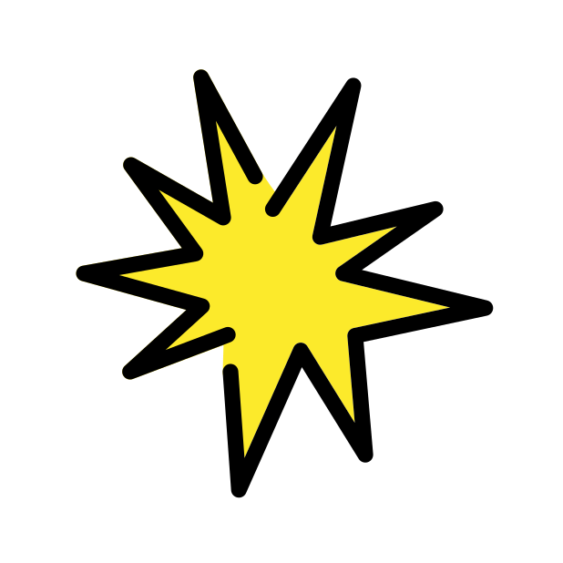
مُستَشفى ج. مُستَشفَيات (ش-ف-ي)
hospital
وِزارة ج. ‑ات (و-ز-ر)
ministry
الخارِجيّة (خ-ر-ج)
foreign affairs
الاقتصاد (ق-ص-د)
economics, economy
مال ج. أموال (م-و-ل)
money
هُناك (—)
there is
أكبَر (+ اسم نكرة) (ك-ب-ر)
the biggest / oldest
رَحِمَها الله (ر-ح-م)
May God rest her soul
سـ · سوف (—)
(future marker) will
Verbs — store as ماضي / مضارع / مصدر
عاشَ / يَعيش / العَيش (ع-ي-ش)
to live
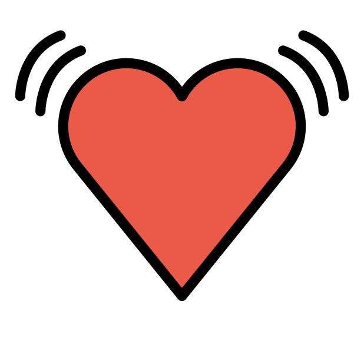
ماتَ / يَموت / المَوت (م-و-ت)
to die
Lesson 8 — المستقبل للتجارة
أُمّ ج. أُمّهات (أ-م-م)
mother
حُكومة ج. ‑ات (ح-ك-م)
government
دَولة ج. دُوَل (د-و-ل)
(nation-)state
دُوَليّ (د-و-ل)
international
رَئيس ج. رُؤَساء (ر-أ-س)
president, head
رَئيس الوُزَراء (ر-أ-س / و-ز-ر)
prime minister
رَأي ج. آراء (ر-أ-ي)
opinion (about — في)
مُستَقبَل (ق-ب-ل)
future
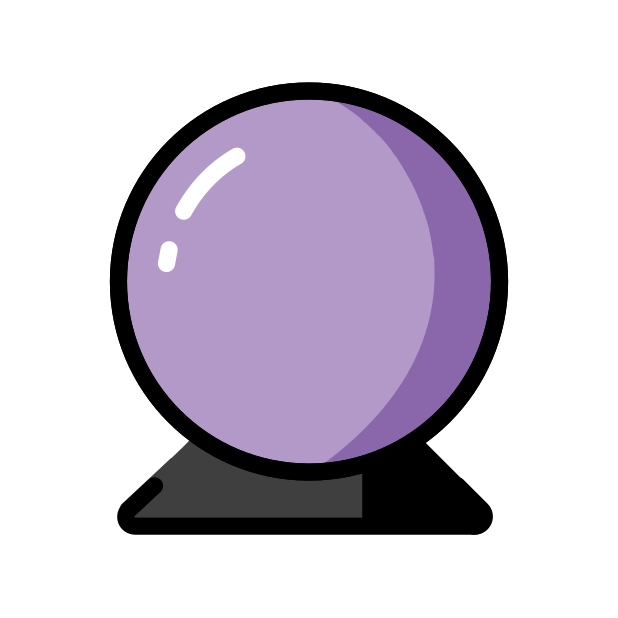
الماضي (م-ض-ي)
the past; last (week/year)
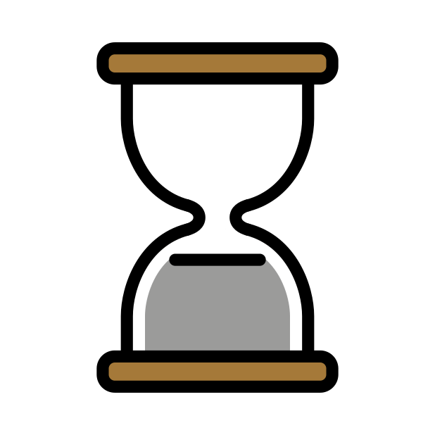
مِثل (م-ث-ل)
like, similar to
طَوالَ (ط-و-ل)
throughout (a time period)
بِفَضْل (ف-ض-ل)
thanks to (+ noun)
كَما (—)
as, just as (+ verb)
بَعدَ أنْ (ب-ع-د)
after (+ verb)
Verbs — store as ماضي / مضارع / مصدر
دَخَلَ / يَدخُل / الدُخول (د-خ-ل)
to enter
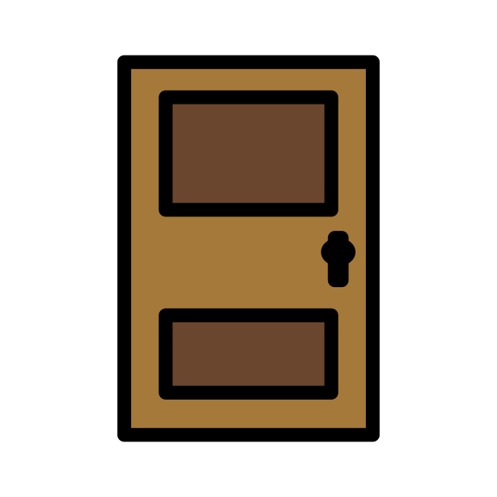
نَجَحَ / يَنجَح / النَجاح (ن-ج-ح)
to succeed in, to pass
حَصَلَ على / يَحصُل على (ح-ص-ل)
to obtain, to get
ذاكَرَ / يُذاكِر / المُذاكَرة (ذ-ك-ر)
to study, review, go over material
رَفَضَ / يَرفُض / الرَفْض (ر-ف-ض)
to refuse
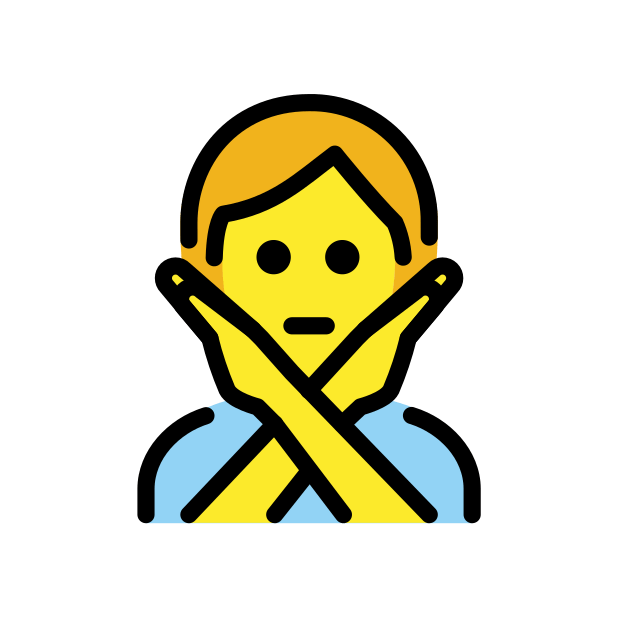
أرادَ / يُريد (+ أنْ + مضارع) (ر-و-د)
to want to
ساعَدَ / يُساعِد … في / المُساعَدة (س-ع-د)
to help (someone) with
التَحَقَ بـ / يَلتَحِق بـ / الالتِحاق بـ (ل-ح-ق)
to join, enter (school/army/party)
Lesson 9 — جدّتي توقظني في السادسة والنصف
آخَر · مؤنّث: أُخرى ج. آخَرون (أ-خ-ر)
other, another
أو (—)
or
ثُمّ (—)
then
بعض (+ اسم جمع) (ب-ع-ض)
some (of)
بَرنامَج ج. بَرامِج (ب-ر-م-ج)
program
جَريدة ج. جَرائد (ج-ر-د)
newspaper
حَوالَيْ (ح-و-ل)
around, about
خاصّ / ة (خ-ص-ص)
special; private; (its) own
سادِس / ة (س-د-س)
sixth
الشَطرَنج (—)
chess
الظُهر (ظ-هـ-ر)
noon
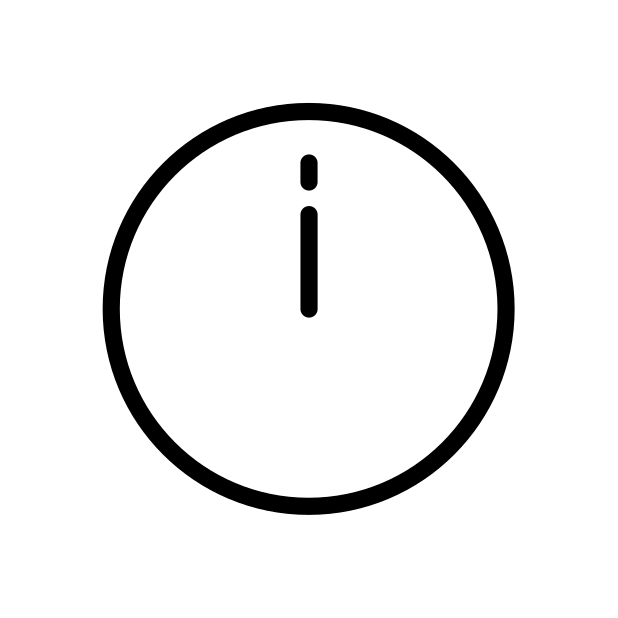
بعد الظُهر (ظ-هـ-ر)
afternoon
الغَداء (غ-د-و)
lunch
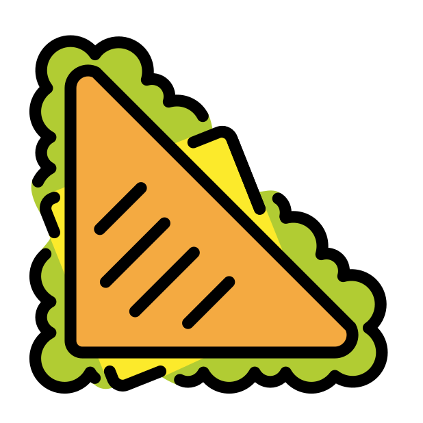
العَشاء (ع-ش-و)
dinner
الفُطور (ف-ط-ر)
breakfast
العالَم (ع-ل-م)
the world
عَين ج. عُيون (ع-ي-ن)
eye
مُفَضَّل / ة (ف-ض-ل)
favorite
نادٍ · النادي ج. نَوادي (ن-د-و)
club (sports, social)
نِصف (ن-ص-ف)
half
مَوضوع ج. مَواضيع (و-ض-ع)
subject, topic
Verbs — store as ماضي / مضارع / مصدر
بَدَأَ / يَبدَأ / البَدء (ب-د-أ)
to begin
جَلَسَ / يَجلِس / الجُلوس (ج-ل-س)
to sit
خَرَجَ من / يَخرُج / الخُروج (خ-ر-ج)
to leave (a place)
دَخَّنَ / يُدَخِّن / التَدخين (د-خ-ن)
to smoke
استَطاعَ / يَستَطيع (+ أنْ) / الاستِطاعة (ط-و-ع)
to be able to
عادَ إلى / يَعود / العَودة (ع-و-د)
to return
فَطَرَ / يَفطُر / الفُطور (ف-ط-ر)
to eat breakfast
نَزَلَ / يَنزِل / النُزول (ن-ز-ل)
to leave (the house) / stay (in a hotel)
أيقَظَ / يوقِظ / الإيقاظ (ي-ق-ظ)
to wake (someone) up
Lesson 10 — بيت العائلة
إذا (+ الماضي) (—)
if (possible condition)
لَو (—)
if (impossible / hypothetical)
مُتَأخِّر / ة (أ-خ-ر)
late
مُباراة ج. مُبارَيات (ب-ر-ي)
match, game (sports)
جامِع ج. جَوامِع (ج-م-ع)
mosque
مُرَتَّب ج. ‑ات (ر-ت-ب)
salary
استِراحة ج. ‑ات (ر-و-ح)
rest period, break
بِسُرعة (س-ر-ع)
quickly, in a hurry
بِصَراحة (ص-ر-ح)
frankly, honestly
الصَلاة (ص-ل-و)
(ritual) prayer
عادةً (ع-و-د)
usually
مُقابَلة ج. ‑ات (ق-ب-ل)
interview
أكثَر (ك-ث-ر)
more
مُمِلّ / ة (م-ل-ل)
boring
مَلِك ج. مُلوك (م-ل-ك)
king
مَوعِد ج. مَواعيد (و-ع-د)
(fixed) time, appointment
وَقت ج. أوقات (و-ق-ت)
time
لَيلة ج. لَيالي (ل-ي-ل)
(a) night
الليلة (ل-ي-ل)
tonight
يُمكِن أنْ (م-ك-ن)
it is possible to
يَكون (ك-و-ن)
to be (present of كان)
Verbs — store as ماضي / مضارع / مصدر
جاءَ / يَجيء / المَجيء (ج-ي-أ)
to come
سَهِرَ / يَسهَر / السَهَر (س-هـ-ر)
to stay up late
أصبَحَ / يُصبِح (ص-ب-ح)
to become
صَحا / يَصحو / الصَحْو (ص-ح-و)
to wake up
صَلّى / يُصَلّي / الصَلاة (ص-ل-و)
to pray, do ritual prayers
فَهِمَ / يَفهَم / الفَهم (ف-هـ-م)
to understand
قابَلَ / يُقابِل / المُقابَلة (ق-ب-ل)
to meet
استَمتَعَ بـ / يَستَمتِع بـ / الاستِمتاع (م-ت-ع)
to enjoy
نامَ / يَنام / النَوم (ن-و-م)
to sleep
Lesson 11 — أشعر بالخجل أحياناً
أحَد (أ-ح-د)
someone
لا أحَد (أ-ح-د)
no one
بَحر ج. بِحار (ب-ح-ر)
sea
بَينَ (ب-ي-ن)
between, among — repeats with pronouns: بَيني وبَينَه
جَبَل ج. جِبال (ج-ب-ل)
mountain
تَجرِبة ج. تَجارِب (ج-ر-ب)
(an) experience
جَولة ج. ‑ات (ج-و-ل)
tour
الخَجَل (خ-ج-ل)
shyness, embarrassment
خُطِبَت لِـ (خ-ط-ب)
she got engaged to — passive, feminine only
السِياحة (س-ي-ح)
tourism
سوق ج. أسواق (س-و-ق)
market — usually مؤنث in formal, مذكر in spoken
صَيدَلِيّة ج. ‑ات (ص-ي-د-ل)
pharmacy
عِدّة (+ اسم جمع نكرة) (ع-د-د)
several — first term of an إضافة, no مِن
عاطِفيّ / ة ج. ‑ون/ين (ع-ط-ف)
emotional, romantic
مُعظَم (+ اسم جمع) (ع-ظ-م)
most (of) — first term of an إضافة, no مِن
عَلاقة ج. ‑ات (بَينَ) (ع-ل-ق)
relationship, relations (between)
عِندَما (+ جملة فعلية) (ع-ن-د)
when (narrative, NOT the question word — that's مَتى)
غالي / ة (غالٍ) (غ-ل-و)
expensive
فُندُق ج. فَنادِق (ف-ن-د-ق)
hotel
مَرّة ج. ‑ات (م-ر-ر)
once, (one) time; pl. times
مَعاً (—)
together
مِن (—)
of, among (quantity) — هو واحد مِن أصحابي
مُهَندِس ج. ‑ون/ين (هـ-ن-د-س)
engineer
Verbs — store as ماضي / مضارع / مصدر
تَبادَلَ / يَتَبادَل / التَّبادُل (ب-د-ل)
to exchange (news, opinions) — وزن VI, the "each other" wazn
تَجَمَّعَ / يَتَجَمَّع / التَّجَمُّع (ج-م-ع)
to gather together — وزن V
تَعَرَّفَ على / يَتَعَرَّف على / التَّعَرُّف على (ع-ر-ف)
to get to know, meet — وزن V
اِنقَطَعَ / يَنقَطِع / الانقِطاع (ق-ط-ع)
to be cut off — وزن VII, the passive of قَطَعَ
خَطَبَ / يَخطُب / الخِطبة (خ-ط-ب)
to ask for someone's hand in marriage
Two supplied forms in L11
The book gives خَطَبَ only as a gloss in the vocabulary notes (p. 227) — the يَخطُب / الخِطبة trio is the standard dictionary form, supplied for consistency with the rest of this table, not printed in Al-Kitaab. Same for the roots throughout this bank: Al-Kitaab has no root column, so roots are added here. مَعاً and مِن are left as — rather than guessed.
Root families (bonus retention hooks)
Note
Same root, multiple words — learning these together makes each stick.
knowing → عَرَفَ (I, to know), المَعرِفة (knowledge), عَرَّفَ بـ (II, to introduce), التَعريف (introduction), تَعَرَّفَ على (V, to get acquainted), مَعروف (well-known)